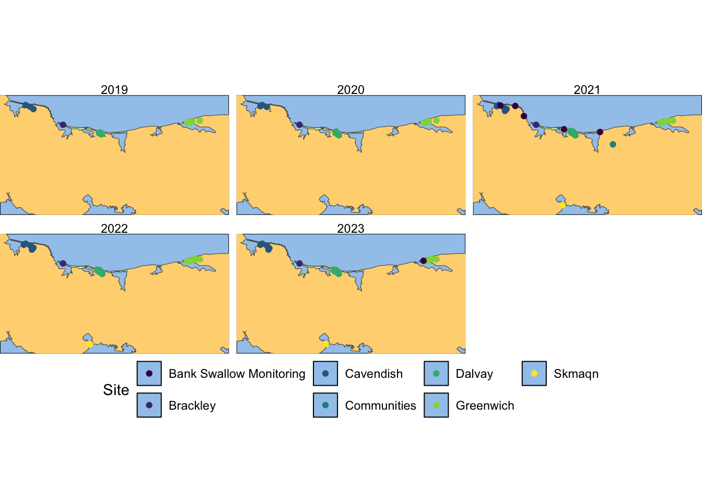
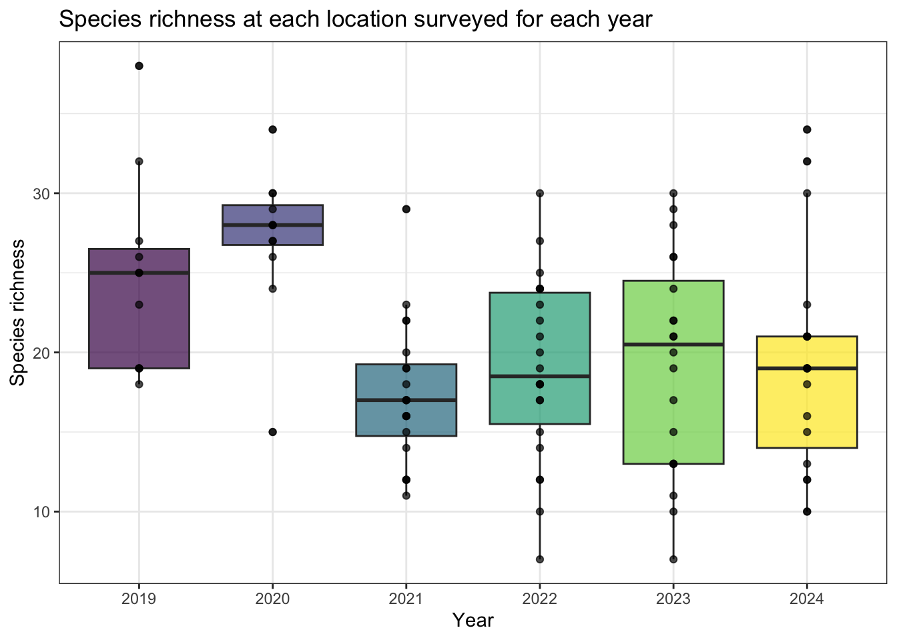
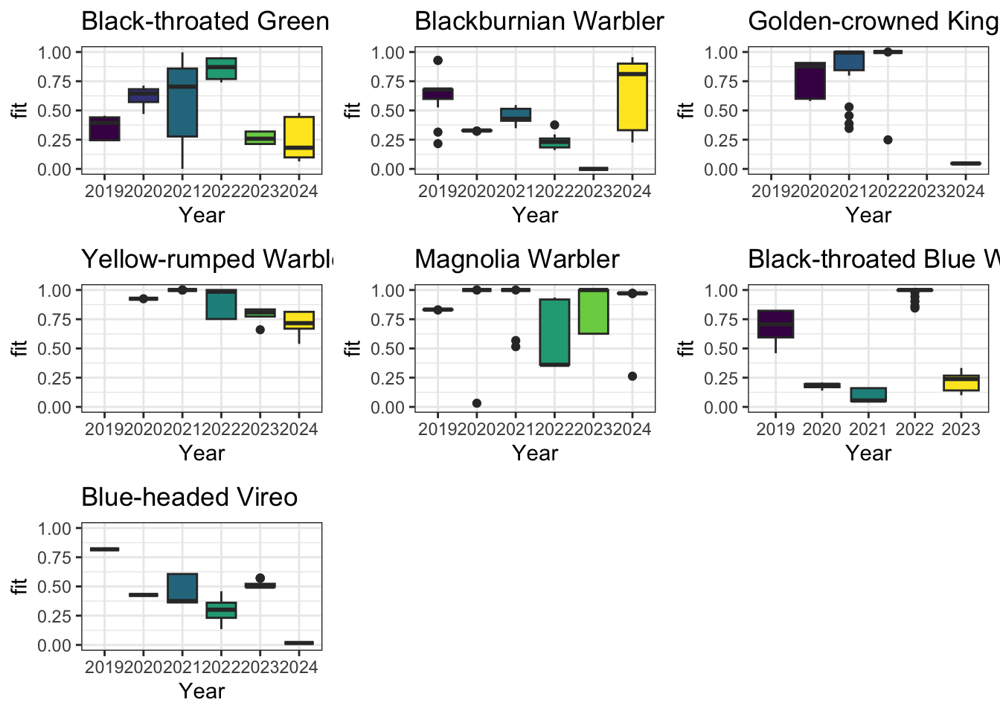
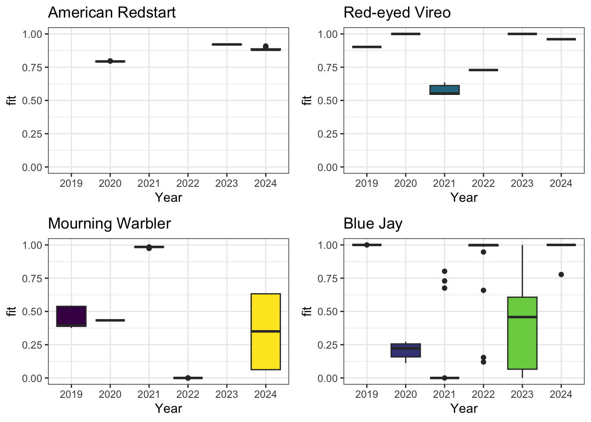
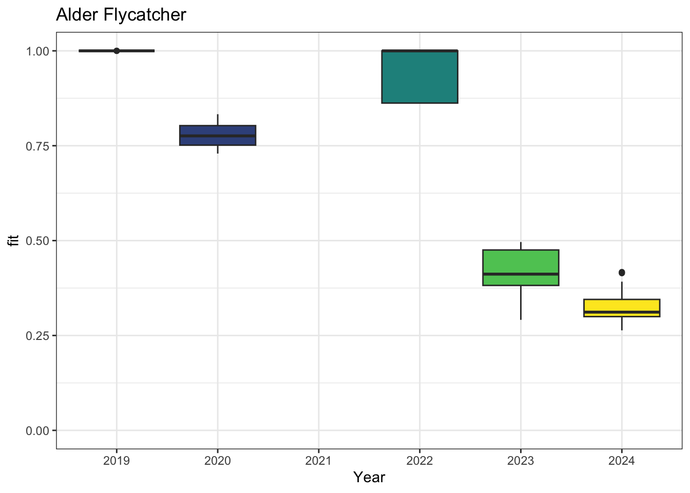
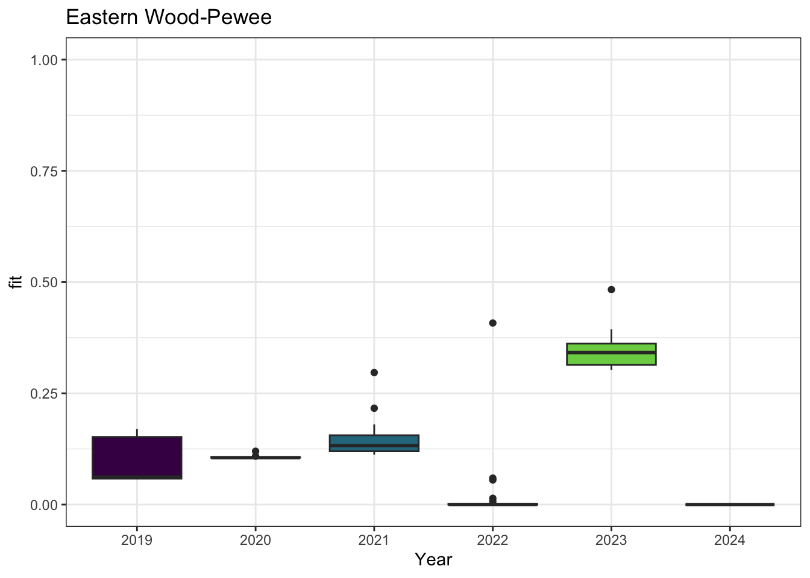

| Location | 2019 | 2020 | 2021 | 2022 | 2023 | Site |
|---|---|---|---|---|---|---|
| PENP-1-1 | 1 | 1 | 1 | 1 | 1 | Cavendish |
| PENP-1-2 | 1 | 1 | 1 | 1 | 1 | Cavendish |
| PENP-1-3 | 1 | 0 | 1 | 1 | 0 | Cavendish |
| PENP-2-3 | 1 | 1 | 1 | 1 | 1 | Brackley |
| PENP-3-1 | 1 | 1 | 1 | 1 | 1 | Dalvay |
| PENP-3-2 | 1 | 1 | 1 | 1 | 1 | Dalvay |
| PENP-3-4 | 1 | 0 | 1 | 1 | 1 | Dalvay |
| PENP-4-1 | 1 | 1 | 1 | 1 | 1 | Greenwich |
| PENP-4-2 | 1 | 1 | 1 | 1 | 1 | Greenwich |
| PENP-4-3 | 1 | 1 | 1 | 1 | 1 | Greenwich |
| PENP-4-4 | 1 | 1 | 1 | 1 | 1 | Greenwich |
| PENP-1-4 | 0 | 1 | 1 | 1 | 1 | Cavendish |
| PENP-3-5 | 0 | 1 | 1 | 1 | 1 | Dalvay |
| PENP-3-6 | 0 | 1 | 1 | 1 | 1 | Dalvay |
| ASC-1 | 0 | 0 | 1 | 0 | 0 | Communities |
| LXI-1 | 0 | 0 | 1 | 0 | 0 | Communities |
| PENP-1-5 | 0 | 0 | 1 | 1 | 1 | Cavendish |
| PENP-1-6 | 0 | 0 | 1 | 1 | 1 | Cavendish |
| PENP-3-7 | 0 | 0 | 1 | 1 | 1 | Dalvay |
| PENP-3-8 | 0 | 0 | 1 | 1 | 1 | Dalvay |
| PENP-4-6 | 0 | 0 | 1 | 1 | 1 | Greenwich |
| PENP-5-1 | 0 | 0 | 1 | 1 | 1 | Skmaqn |
| PENP-BS-1 | 0 | 0 | 1 | 0 | 0 | Bank Swallow Monitoring |
| PENP-BS-2 | 0 | 0 | 1 | 0 | 0 | Bank Swallow Monitoring |
| PENP-BS-3 | 0 | 0 | 1 | 0 | 0 | Bank Swallow Monitoring |
| PENP-BS-4 | 0 | 0 | 1 | 0 | 0 | Bank Swallow Monitoring |
| PENP-BS-5 | 0 | 0 | 1 | 0 | 0 | Bank Swallow Monitoring |
| PENP-4-5 | 0 | 0 | 0 | 1 | 1 | Greenwich |
| PENP-E1 | 0 | 0 | 0 | 1 | 0 | Skmaqn |
| PENP-BS-6 | 0 | 0 | 0 | 0 | 1 | Bank Swallow Monitoring |
Report on the use of passive acoustic monitoring in Prince Edward Island National Park

To run this report locally:
- Open RStudio or your preferred IDE
- Create a new project and set up for version control using the GitHub repository
- Pull from remote main
- Load the
pei.RDatafile in the first chunk - Render the document and review the results
Abstract
Passive acoustic monitoring has proven to be a valuable tool for monitoring vocalizing species. Environmental sensors are becoming increasingly easy to program and can autonomously generating extensive data sets of the soundscape, an invaluable resource for ecological integrity monitoring. Prince Edward Island National deployed autonomous recording units (ARUs) across 30 locations during a comprehensive five-year survey. The analysis revealed that species richness and diversity remained relatively stable, while single-species species occupancy exhibited diverse patterns. Common and generalist species showed consistent occupancy, but there was a notable reduction in conifer-nesting species in 2023, likely attributed to forest structural loss. Ongoing monitoring and dynamic models can yield more detailed and predictive results to ensure the continued maintenance of ecological integrity in the Park.
Land Acknowledgement
In the spirit of Reconciliation, we acknowledge that the land upon which this data was gathered is unceeded Mi’kmaq territory. Epekwitk (Prince Edward Island), Mi’kma’ki, is covered by the historic Treaties of Peace and Friendship. We pay our respects to the Indigenous Mi’kmaq People who have occupied this Island for over 12,000 years; past, present and future.
Introduction
Human activities have been identified as key pressures and contributors to the global decline in forest wildlife (Allan et al. (2017)). The repercussions of habitat fragmentation (Fahrig (2003)) and loss (Hanski (2011)), climate change (Mantyka-pringle, Martin, and Rhodes (2012), Sattar et al. (2021), Abrahms et al. (2023)), and increased access to sensitive areas exert direct and indirect pressures on forest biodiversity, particularly in managed regions in Canada (Lemieux et al. (2011)).
Allan, James R, Oscar Venter, Sean Maxwell, Bastian Bertzky, Kendall Jones, Yichuan Shi, and James EM Watson. 2017. “Recent Increases in Human Pressure and Forest Loss Threaten Many Natural World Heritage Sites.” Biological Conservation 206: 47–55.
Fahrig, Lenore. 2003. “Effects of Habitat Fragmentation on Biodiversity.” Annual Review of Ecology, Evolution, and Systematics 34 (1): 487–515.
Hanski, Ilkka. 2011. “Habitat Loss, the Dynamics of Biodiversity, and a Perspective on Conservation.” Ambio 40 (3): 248–55.
Mantyka-pringle, Chrystal S, Tara G Martin, and Jonathan R Rhodes. 2012. “Interactions Between Climate and Habitat Loss Effects on Biodiversity: A Systematic Review and Meta-Analysis.” Global Change Biology 18 (4): 1239–52.
Sattar, Q, ME Maqbool, R Ehsan, S Akhtar, Q Sattar, ME Maqbool, R Ehsan, and S Akhtar. 2021. “Review on Climate Change and Its Effect on Wildlife and Ecosystem.” Open J Environ Biol 6 (1): 008–14.
Abrahms, Briana, Neil H Carter, TJ Clark-Wolf, Kaitlyn M Gaynor, Erik Johansson, Alex McInturff, Anna C Nisi, Kasim Rafiq, and Leigh West. 2023. “Climate Change as a Global Amplifier of Human–Wildlife Conflict.” Nature Climate Change 13 (3): 224–34.
Lemieux, Christopher J, Thomas J Beechey, Daniel J Scott, and Paul A Gray. 2011. “The State of Climate Change Adaptation in Canada’s Protected Areas Sector.” The Canadian Geographer/Le Géographe Canadien 55 (3): 301–17.
Shonfield, Julia, and Erin M Bayne. 2017. “Autonomous Recording Units in Avian Ecological Research: Current Use and Future Applications.” Avian Conservation & Ecology 12 (1).
Sugai, Larissa Sayuri Moreira, Thiago Sanna Freire Silva, Jr Ribeiro José Wagner, and Diego Llusia. 2018. “Terrestrial Passive Acoustic Monitoring: Review and Perspectives.” BioScience 69 (1): 15–25. https://doi.org/10.1093/biosci/biy147.
In 2019, Prince Edward Island National Park initiated a program incorporating autonomous recording units (ARUs) for passive acoustic monitoring (PAM) of the Park’s wildlife. ARUs are compact environmental sensors that are designed to passively record the environment (Shonfield and Bayne (2017)), capturing vocalizing species like birds and amphibians, which is growing in use across the globe (Sugai et al. (2018)). This technology enables resource managers to conduct prolonged surveys with minimal human interference. The subsequent data collected by these units contribute valuable information to ecological integrity metrics such as species richness, diversity, occupancy, and trends over time. This data aids decision-making and management within the Park. Given the rapid and ease of accumulating data from these units, maintaining a high standard of data integrity is paramount to ensure future data interoperability and sharing. WildTrax is an online platform developed by the Alberta Biodiversity Monitoring Institute (ABMI) for users of environmental sensors to help addresses these big data challenges by providing solutions to standardize, harmonize, and share data.
The objectives of this report are to:
- Describe the data management and processing procedures for the acoustic data collected from 2019 to 2023;
- Utilize traditional human tagging, visual scanning and automated recognition techniques to detect and count species and individuals heard on recordings;
- Define straightforward methods for evaluating species presence, species richness, and species occupancy over time at various locations;
- Offer recommendations for ongoing monitoring approaches to contribute to the assessment of ecological integrity in forest ecosystems;
- Facilitate data publication to the public, resource managers, academic institutions, and any other relevant agencies
Methods
Data collection
Data were collected during the spring and summer seasons from 2019 to 2023. A total of 30 locations were surveyed over the five-year period:
- 21 locations as part of the forest songbird monitoring program (code:
PENP-*) with ARUs recording during the morning hours, - 6 for Bank Swallow Monitoring (code:
PENP-BS-*) with ARUs placed strategically beside ponds recording in the evening, - 2 locations deployed in First Nations communities (
ASC-1, LXI-1) to complement the forest songbird and evening schedules, - And one location (
PENP-E1), which was to examine the effects of a single public event
Locations were surveyed on rotation with 9 locations (PENP-1-1, PENP-1-2, PENP-2-3, PENP-3-1, PENP-3-2, PENP-4-1, PENP-4-2, PENP-4-3, PENP-4-4) surveyed each year. A detailed list of all survey years can be found in Table 1 (Table 1) and illustrated in Figure 1 (Figure 1). ARUs were deployed at the beginning of the breeding season in April-May, and rotated locations until their final retrieval in July-August. At the forest songbird locations (PENP-*), the ARUs were set to record for 30 minutes continuously every hour for four hours, starting one hour before dawn and ending three hours after dawn. For Bank Swallow Monitoring locations (PENP-BS), recordings were made every 5 minutes for a duration of 3 minutes each from 1.5 hours before dusk to 1.5 hours after dusk. On average, each ARU recorded for 11.27 +/- 8.03 days.

| location | Distance from coast (m) | Anthro | Deciduous | Open | Conifer |
|---|---|---|---|---|---|
| PENP-1-1 | 751 | 0.05 | 0.60 | 0.35 | 0.00 |
| PENP-1-2 | 491 | 0.06 | 0.00 | 0.00 | 0.94 |
| PENP-1-3 | 1540 | 0.03 | 0.00 | 0.13 | 0.85 |
| PENP-1-4 | 820 | 0.09 | 0.00 | 0.00 | 0.91 |
| PENP-1-5 | 2050 | 0.00 | 0.91 | 0.01 | 0.08 |
| PENP-1-6 | 1640 | 0.00 | 0.00 | 0.97 | 0.03 |
| PENP-2-3 | 78 | 0.11 | 0.02 | 0.12 | 0.75 |
| PENP-3-1 | 678 | 0.32 | 0.01 | 0.00 | 0.67 |
| PENP-3-2 | 672 | 0.09 | 0.38 | 0.00 | 0.53 |
| PENP-3-4 | 355 | 0.31 | 0.00 | 0.00 | 0.69 |
| PENP-3-5 | 63 | 0.10 | 0.04 | 0.57 | 0.29 |
| PENP-3-6 | 1198 | 0.00 | 0.46 | 0.00 | 0.54 |
| PENP-3-7 | 408 | 0.02 | 0.00 | 0.10 | 0.89 |
| PENP-3-8 | 65 | 0.39 | 0.00 | 0.17 | 0.43 |
| PENP-4-1 | 447 | 0.00 | 0.34 | 0.25 | 0.41 |
| PENP-4-2 | 912 | 0.00 | 0.05 | 0.21 | 0.75 |
| PENP-4-3 | 1271 | 0.06 | 0.14 | 0.00 | 0.80 |
| PENP-4-4 | 902 | 0.00 | 0.01 | 0.00 | 0.99 |
| PENP-4-5 | 576 | 0.57 | 0.43 | 0.00 | 0.00 |
| PENP-4-6 | 789 | 0.00 | 0.84 | 0.00 | 0.16 |
| PENP-5-1 | 137 | 0.00 | 0.00 | 0.36 | 0.64 |
Data management
A total of 10078 recordings were collected (see Figure 3). From 2019 - 2021, data were transferred via hard drive to the University of Alberta in Edmonton, where they are redundantly stored on a server known as Cirrus. The recordings were standardized to ensure adherence to the naming convention of LOCATION_DATETIME, such as PENP-1-1_20230625_053500.wav. The remaining recordings (2022 - 2023) were directly uploaded to WildTrax by Parks Canada staff and can be downloaded from the platform’s Recording tab, accessible under Manage > Download list of recordings (see Figure 2).


Community data processing
The principal goal for data processing was to describe the acoustic community of species heard at locations while choosing a large enough subset of recordings for analyses. To ensure balanced replication, for each location and year surveyed, four randomly selected recordings were processed for 3-minutes between the hours of 4:00 AM - 7:59 AM ideally on four separate dates (see Table 3). Four recordings will ensure that we have the minimum number of samples for a simple occupancy analysis (Darryl I. MacKenzie et al. (2002) and Darryl I. MacKenzie et al. (2003)). Tags are made using count-removal (see Farnsworth et al. (2002), Sólymos et al. (2018)) where tags are only made at the time of first detection of each individual heard on the recordings. In case a species was overly abundant a TMTT (‘too many to tag’) flag was used (see Table 5). 1% of the total tags were TMTT but were subsequently converted to numeric using wildRtrax::wt_replace_tmtt. We also verified that all tags that were created were checked by a second observer (n = 67.46) to ensure accuracy of detections (see Table 4). Amphibian abundance was estimated at the time of first detection using the North American Amphibian Monitoring Program with abundance of species being estimated on the scale of “calling intensity index” (CI) of 1 - 3. Mammals such as Red Squirrel, were also noted on the recordings. After the data are processed in WildTrax, the wildRtrax package is use to download the data into a standard format prepared for analysis. The wt_download_report function downloads the data directly to a R framework for easy manipulation (see wildRtrax APIs).
MacKenzie, Darryl I., James D. Nichols, James E. Hines, Melinda G. Knutson, and Alan B. Franklin. 2003. “ESTIMATING SITE OCCUPANCY, COLONIZATION, AND LOCAL EXTINCTION WHEN a SPECIES IS DETECTED IMPERFECTLY.” Ecology 84 (8): 2200–2207. https://doi.org/https://doi.org/10.1890/02-3090.
Farnsworth, George L, Kenneth H Pollock, James D Nichols, Theodore R Simons, James E Hines, and John R Sauer. 2002. “A Removal Model for Estimating Detection Probabilities from Point-Count Surveys.” The Auk 119 (2): 414–25.
Sólymos, Péter, Steven M. Matsuoka, Steven G. Cumming, Diana Stralberg, Patricia Fontaine, Fiona K. A. Schmiegelow, Samantha J. Song, and Erin M. Bayne. 2018. “Evaluating time-removal models for estimating availability of boreal birds during point count surveys: Sample size requirements and model complexity.” The Condor 120 (4): 765–86. https://doi.org/10.1650/CONDOR-18-32.1.
pei_projects <- wildRtrax::wt_get_download_summary(sensor = 'ARU') |>
filter(grepl('^Prince Edward Island National Park Forest Songbird', project)) |>
select(project_id) |>
pull()
pei_main <-
map_dfr(
.x = pei_projects,
.f = ~ wildRtrax::wt_download_report(
project_id = .x,
sensor_id = "ARU",
weather_cols = T,
reports = "main"
)
)| location | year | task_duration | typ | n |
|---|---|---|---|---|
| PENP-1-1 | 2019 | 180s | Dawn | 6 |
| PENP-1-1 | 2019 | 180s | Day | 7 |
| PENP-1-1 | 2020 | 180s | Dawn | 9 |
| PENP-1-1 | 2020 | 180s | Day | 2 |
| PENP-1-1 | 2021 | 180s | Night | 4 |
| PENP-1-1 | 2022 | 180s | Dawn | 4 |
| PENP-1-1 | 2023 | 180s | Dawn | 4 |
| Tag is verified | Count | Proportion |
|---|---|---|
| 137 | 1.32 | |
| f | 3239 | 31.22 |
| t | 6998 | 67.46 |
| location | recording_date_time | species_code | individual_count |
|---|---|---|---|
| PENP-1-1 | 2019-06-01 05:25:00 | AMCR | TMTT |
| PENP-1-1 | 2019-06-01 05:25:00 | AMRE | TMTT |
| PENP-1-1 | 2019-06-02 06:24:00 | YEWA | TMTT |
| PENP-1-1 | 2019-06-02 06:24:00 | AMCR | TMTT |
| PENP-1-1 | 2019-06-02 06:24:00 | AMRE | TMTT |
| PENP-1-1 | 2019-06-04 07:23:00 | AMRE | TMTT |
Visual scanning
Visual scanning is the concept of visually examining spectrograms in order to find a signal within an audio recording. Visual scanning can be a useful processing method allowing trained users to process recordings much faster than traditional listening. It has been used for detecting different taxa (amphibians: Cameron et al. (2020), mammals: Garland et al. (2020)) with comparable biological metrics, as well as helping to maximize species detection in large acoustic monitoring data sets (Ware et al. (2023)). WildTrax’s project settings and dynamic spectrogram settings in the processing interface allow users to upload many recordings, while also allowing frequency-limited or time-limited spectrograms. These changes are easily made by adjusting project settings in WildTrax (see Figure 4).
Cameron, J., A. Crosby, C. Paszkowski, and E. Bayne. 2020. “Visual Spectrogram Scanning Paired with an Observation–Confirmation Occupancy Model Improves the Efficiency and Accuracy of Bioacoustic Anuran Data.” Canadian Journal of Zoology 98 (11): 733–42. https://doi.org/10.1139/cjz-2020-0103.
Garland, Laura, Andrew Crosby, Richard Hedley, Stan Boutin, and Erin Bayne. 2020. “Acoustic Vs. Photographic Monitoring of Gray Wolves (Canis lupus): A Methodological Comparison of Two Passive Monitoring Techniques.” Canadian Journal of Zoology 98 (3): 219–28. https://doi.org/10.1139/cjz-2019-0081.
Ware, Lena, C. Lisa Mahon, Logan McLeod, and Jean-François Jetté. 2023. “Artificial Intelligence (BirdNET) Supplements Manual Methods to Maximize Bird Species Richness from Acoustic Data Sets Generated from Regional Monitoring.” Canadian Journal of Zoology 101 (12): 1031–51. https://doi.org/10.1139/cjz-2023-0044.

In order to determine presence of Bank Swallow (BANS) at PENP-BS-* site, visual scanning was employed to identify the time of first detection of the species on recordings at these locations. A total of 630 recordings were visually scanned for BANS. Tags were made at the time of first detection in each minute interval.
Automated recognition
Automated recognition is a well-known process to help detect rare and elusive species (Knight and Bayne (2019). Shonfield, Heemskerk, and Bayne (2018)) as well as species that may have a low detectability by collecting large data sets. In order to determine We constructed a recognizer for Eastern Wood-Pewee (EAWP) and used three previously constructed Wildlife Acoustics SongScope recognizers for Olive-sided Flycatcher (OSFL), Rusty Blackbird (RUBL) and Canada Warbler (CAWA) to detect for the presence of these species in the 2019 data set. All recognizers are freely available on WildTrax under Methods and Protocols > Automated Recognizers. Hits were verified and true positives for presence at each location (recording where the species was first positively detected) were uploaded to WildTrax via the wt_songscope_tags function in wildRtrax.
Knight, Elly C, and Erin M Bayne. 2019. “Classification Threshold and Training Data Affect the Quality and Utility of Focal Species Data Processed with Automated Audio-Recognition Software.” Bioacoustics 28 (6): 539–54.
Shonfield, Julia, Sarah Heemskerk, and Erin M Bayne. 2018. “Utility of Automated Species Recognition for Acoustic Monitoring of Owls.” Journal of Raptor Research 52 (1): 42–55.
Analyses
Species richness, diversity and occupancy were calculated using the 21 forest songbird monitoring locations (PENP-). We calculated species richness as distinct species found at each location and year surveyed (see Figure 5), omitting species using wildRtrax::wt_tidy_species() for abiotic, amphibians, unknowns and insects. To determine if there were any changes to species diversity, we used Shannon’s diversity index over years using vegan::diversity (see Figure 8).
For testing species occupancy, we selected locations with a minimum of four dawn visits for each year across all five years, focusing on forest obligate species for ecological relevance (see Table 6). Utilizing a single-season single-species occupancy model from Darryl I. MacKenzie et al. (2002), we calculated the predicted occupancy of species at all locations surveyed in each year across years. Site-specific covariates included the distance to ocean edge (in meters) and the proportional area of each cover type from the Prince Edward Island 2010 Corporate Land Use Inventory at 150 meter radius surrounding the ARU categorized into anthropogenic (pavement, soy), open (grass, sand dune, bare soil), deciduous (red maple, white birch, alder, poplar) and conifer (white spruce, black spruce, balsam fir). Observation covariates incorporated day of the year, hour, observer, and a quadratic term for both day of year (\(doy^{2}\)) and hour (\(hr^{2}\)). See Table 2 for more information. Despite variations in processing methodology between 2019 - 2020 (1SPM - species-individual detected per minute, i.e. repeat sampling each minute for 3 minute) and subsequent years (2021 - 2023; 1SPT), we maintained consistency by exclusively utilizing the time to the first detection of individuals from the 1SPM recordings. Model predictions were generated, with goodness-of-fit testing using methods from Darryl I. MacKenzie and Bailey (2004) and the best model selected based on AIC and through MuMIn::dregde, MuMIn::get.models and MuMIn::model.sel. If more than one model existed, the average model was used using MuMIn::model.avg. The final predictions were then made and plotted over years and sorted by nesting guilds of species into conifer, deciduous, treed / shrubby and open.
MacKenzie, Darryl I, James D Nichols, Gideon B Lachman, Sam Droege, J Andrew Royle, and Catherine A Langtimm. 2002. “Estimating Site Occupancy Rates When Detection Probabilities Are Less Than One.” Ecology 83 (8): 2248–55.
MacKenzie, Darryl I., and Larissa L. Bailey. 2004. “Assessing the Fit of Site-Occupancy Models.” Journal of Agricultural, Biological, and Environmental Statistics 9 (3): 300–318. http://www.jstor.org/stable/1400484.
Results
Species richness
A total of 100 species were found across the five years. Figure 5 describes the relationship of species richness across each location and survey year with Figure 6 showing the relationship between species richness and survey effort.


| species_common_name | general_type | migration | feeding | breeding_substrate | foraging_type | substrate_nesting | habitat_nesting |
|---|---|---|---|---|---|---|---|
| Alder Flycatcher | S | NM | In | Air | Sal | Sh | TSS |
| American Redstart | NA | NA | NA | NA | NA | NA | MW |
| Baltimore Oriole | NA | NA | NA | NA | NA | NA | OW |
| Bay-breasted Warbler | NA | NA | NA | NA | NA | NA | CW |
| Black-and-white Warbler | NA | NA | NA | NA | NA | NA | MW |
| Black-backed Woodpecker | S | R | In | Ba | Sca | Sn | CW |
| Black-throated Blue Warbler | NA | NA | NA | NA | NA | NA | MW |
| Black-throated Green Warbler | NA | NA | NA | NA | NA | NA | CW |
| Blackburnian Warbler | NA | NA | NA | NA | NA | NA | CW |
| Blackpoll Warbler | NA | NA | NA | NA | NA | NA | CW |
| Blue Jay | G | NA | NA | NA | NA | NA | OW |
| Blue-headed Vireo | S | SDM | In | LCS | Gl | CT | MW |
| Boreal Chickadee | S | R | In | LCS | Gl | Sn | CW |
| Brown Creeper | NA | NA | NA | NA | NA | NA | CW |
| Canada Jay | G | R | Om | UC | Fo | CT | CW |
| Canada Warbler | NA | NA | NA | NA | NA | NA | MW |
| Cape May Warbler | NA | NA | NA | NA | NA | NA | CW |
| Chestnut-sided Warbler | NA | NA | NA | NA | NA | NA | MW |
| Chipping Sparrow | G | SDM | Om | Gr | Fo | CT | OW |
| Common Nighthawk | S | NM | In | Air | Scr | Gr | OW |
| Dark-eyed Junco | G | SDM | Om | Gr | Fo | Gr | CW |
| Downy Woodpecker | G | NA | NA | NA | NA | NA | MW |
| Eastern Wood-Pewee | S | NA | NA | NA | NA | NA | OW |
| Fox Sparrow | G | SDM | Om | Gr | Fo | Gr | OW |
| Golden-crowned Kinglet | S | NA | NA | NA | NA | NA | CW |
| Gray Catbird | S | NA | NA | NA | NA | NA | MW |
| Hairy Woodpecker | NA | NA | NA | NA | NA | NA | MW |
| Hermit Thrush | S | SDM | In | Gr | Gl | Gr | CW |
| Lincoln's Sparrow | NA | NA | NA | NA | NA | NA | TSS |
| Magnolia Warbler | NA | NA | NA | NA | NA | NA | MW |
| Mountain Bluebird | S | SDM | In | Gr | Gl | Sn | OW |
| Mourning Warbler | NA | NA | NA | NA | NA | NA | MW |
| Northern Flicker | S | SDM | In | Gr | Gl | Sn | MW |
| Northern Parula | NA | NA | NA | NA | NA | NA | OW |
| Orange-crowned Warbler | S | SDM | In | LCS | Gl | Gr | OW |
| Philadelphia Vireo | NA | NA | NA | NA | NA | NA | MW |
| Pileated Woodpecker | S | R | In | Ba | Ex | Sn | MW |
| Pine Warbler | NA | NA | NA | NA | NA | NA | CW |
| Red-eyed Vireo | NA | NA | NA | NA | NA | NA | MW |
| Ruby-crowned Kinglet | S | SDM | In | UC | Gl | CT | CW |
| Ruffed Grouse | G | R | Om | Gr | Fo | Gr | MW |
| Rusty Blackbird | NA | NA | NA | NA | NA | NA | TSS |
| Swainson's Thrush | G | NM | Om | Gr | Fo | CT | MW |
| Veery | NA | NA | NA | NA | NA | NA | MW |
| Warbling Vireo | NA | NA | NA | NA | NA | NA | MW |
| Western Wood-Pewee | S | NM | In | Air | Sal | CT | OW |
| Yellow-bellied Sapsucker | G | SDM | Om | Ba | Ex | DT | MW |
| Yellow-rumped Warbler | S | SDM | In | LCS | Gl | CT | CW |

Species diversity
Shannon’s diversity was stable based on results. (see Figure 8.)

Species occupancy
We selected 20 species to represent the forest songbird community into 4 separate habitat nesting guilds (see Table 6): conifer (Figure 9), deciduous (Figure 10), treed / shrubby (Figure 11) and open (Figure 12). Analysis of species occupancy revealed diverse and varied changes across these species. Analytically, many models were singular, and a few exhibited overdispersion (indicated by c-hat in ?@tbl-c-hat), likely due to low detections or a limited sample size of spatial locations. Ubiquitous species such as Yed-eyed Vireo, Yellow-rumped Warbler, Magnolia Warbler and Northern Parula, demonstrated stable site occupancy across the years. Generalist species or those capable of capitalizing on utilizing mixed habitats, exemplified by the Northern Parula, also maintained consistent occupancy levels. The occurrence of Hurricane Fiona in 2023 led to notable breakpoints in the occupancy of certain species: coniferous species, including the Black-throated Green Warbler, Black-throated Blue Warbler, Blackburnian Warbler, Golden-crowned Kinglet, and Mourning Warbler, experienced declines. Conversely, increases were observed in guilds of species that favor more open or shrubby habitats, such as the Alder Flycatcher and American Redstart. Thrushes (American Robin, Swainson’s Thrush, Hermit Thrush) had notably wavering occupancy throughout the years.




Visual scanning
BANS were detected at 3 distinct locations (PENP-BS-1).
Automated recognition
We found that there was no advantage to utilizing the recognizer to find Eastern Wood-Pewee over human transcribing as the species was very detectable (see ?@tbl-recog-results).
Amphibians
A total of 7 were detected: SPPE, AMTO, NLFR, GRFG, WOFR, MIFR, BULL. A preliminary pattern of amphibian activity can be seen in Figure 13 for Green Frog and Spring Peeper where there were enough detections to generate activity patterns. Spring peeper activity commenced much earlier than Green Frog although seasonal patterns are consistent with the species’ phenology Lovett (2013), Ackleh et al. (2010).
Lovett, Gary M. 2013. “When Do Peepers Peep? Climate and the Date of First Calling in the Spring Peeper (Pseudacris Crucifer) in Southeastern New York State.” Northeastern Naturalist 20 (2): 333–40.
Ackleh, Azmy S, Jacoby Carter, Lauren Cole, Tom Nguyen, Jay Monte, and Claire Pettit. 2010. “Measuring and Modeling the Seasonal Changes of an Urban Green Treefrog (Hyla Cinerea) Population.” Ecological Modelling 221 (2): 281–89.

Discussion
Considering the natural disturbance effects seen in the Park, species richness and diversity stayed relatively stable. Individuals of conifer dominant stands likely moved to more suitable habitat outside the park, suggesting the potential utility of metapopulation analysis through passive acoustic monitoring via citizen science. Further analysis may utilize dynamic occupancy models, multi-species multi-season occupancy models, or community shifts to describe richness and diversity while accounting for decreases in species that may rely on specific habitat structures within the park. Additional geospatial assets could improve the accuracy of modelling apporaches as well. This study underscores the efficacy of autonomous recording units (ARUs) as a powerful tool for monitoring climatic and habitat shifts with a relatively low sample size and area coverage.
Avian species within the Park forest demonstrate a non-uniform distribution. Recommendations for optimizing the efficiency and reliability of the ARU program include:
- Prioritizing monitoring of historical locations, particularly emphasizing repeats at PENP-1-1, PENP-1-2, PENP-2-3, PENP-3-1, PENP-3-2, PENP-4-1, PENP-4-2, PENP-4-3, PENP-4-4 as baselines for evaluating ecological changes over time.
- Adjusting monitoring times to dawn and dusk and extending deployment periods to 4-7 days between May 15 and July 15 to maximize vocalizations during peak activity periods.
- Regular servicing of ARUs, focusing on testing microphone sensitivity degradation to ensure optimal functionality, data reliability, and longevity.
- Continuing high-quality verification of tags to create annotated datasets for building and automating classifiers within WildTrax.